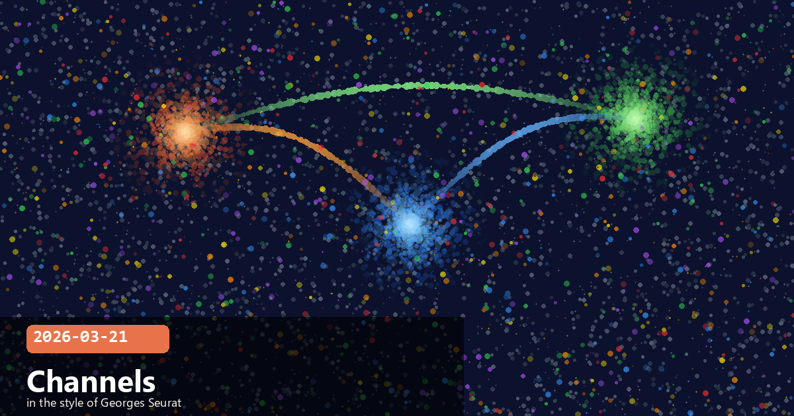

Claude Code Channels, Policy Update, CI Flags & Extended Thinking Display

✦ Claude Code Channels — Message Your Agent from Telegram or Discord
Anthropic shipped Claude Code Channels as a research preview on 21 March 2026, letting you send instructions from Telegram or Discord directly into a running Claude Code session on your local machine. The session responds with full filesystem, MCP, and git access — then replies back through the same chat thread. For developers who spend time away from their desk, this means you can kick off a refactor, check agent progress, or request a build report without ever opening a terminal.
How it works
Claude Code v2.1.80+ exposes a Channels plugin that registers with Telegram or Discord via a bot token
Messages are routed through MCP — the same open standard used for local tool extensions
Bidirectional: instructions flow in, results (diffs, test output, error logs) flow back out as formatted messages
The agent retains full context of the open session — no cold start with each message
Community-requested next targets: Slack, WhatsApp, and iMessage
Get started: Update to Claude Code v2.1.80+, run /channels setup in your session, and follow the bot-token wizard for your preferred platform. Full setup takes under five minutes.
Claude CodeMCPproductivitydeveloper toolsmobile
✦ Anthropic's Usage Policy Update — Publicly Available Information Now Permitted
Anthropic updated Claude's usage policy to allow responses about weapons, explosives, and regulated substances when the information is already freely and widely available online. The core reasoning: if a user can retrieve the same content from a standard web search in under a minute, refusing to discuss it creates friction without meaningfully reducing risk. Claude still maintains hard limits on novel synthesis routes, non-public technical details, and anything that would provide meaningful operational uplift to someone attempting mass harm — those limits are unchanged.
What changed
Permitted: discussing publicly documented properties of common chemicals, historical weapons systems, and regulated substances covered extensively in textbooks and online references
Still blocked: novel or unpublished synthesis methods, step-by-step operational guidance for attacks, and anything calibrated to meaningfully assist mass-casualty scenarios
The update represents a calibration, not a rollback — Anthropic frames it as aligning Claude's behaviour with realistic threat models rather than symbolic caution
Why this matters: Over-refusal has a real cost — it degrades trust, pushes users to less-safe alternatives, and makes Claude less useful for legitimate researchers, educators, and journalists. Anthropic is trying to thread the needle between meaningful safety and unnecessary paternalism.
safetypolicyresponsible AIusage policy
✦ Claude Code Gets --bare Flag for CI Pipelines & Permission Relay for Channels
The same Claude Code release that shipped Channels also introduced two significant improvements for power users. The --bare flag strips Claude Code down to essentials when running in headless -p mode — skipping hooks, LSP sync, plugin directory walks, and skill loading. This makes Claude Code far easier to embed in CI/CD pipelines where startup overhead and side-effects matter. Alongside it, the --channels permission relay allows a channel server that declares the permission capability to forward tool-approval prompts directly to your mobile device — closing the oversight loop for long-running background agents.
Key improvements in this release
--bare on claude -p calls: no hooks, no LSP, no plugin scan — clean, fast, scriptable
--channels relay: tool-approval prompts appear in Telegram/Discord, letting you approve or deny from your phone
Bug fix: multiple concurrent Claude Code sessions no longer trigger repeated OAuth re-authentication
Minimum version for all Channels features: Claude Code v2.1.80+
CI tip: Use claude -p --bare "your task" in GitHub Actions or similar pipelines to avoid plugin initialisation noise in your logs and shave seconds off each run.
Claude CodeCI/CDautomationdeveloper toolspermissions
✦ Extended Thinking Gets display: "omitted" — Faster Streaming Without Losing State
Anthropic added a thinking.display: "omitted" option to the API's extended thinking configuration. When set, the API returns thinking blocks with an empty thinking field rather than the full chain-of-thought text — but critically, the cryptographic signature is still preserved. This means multi-turn continuity is maintained even when thinking content is stripped from the streamed response, because Claude can still verify the integrity of prior thinking blocks without re-reading them.
Why use it
Bandwidth: extended thinking blocks can be very large; omitting them from the stream can reduce response size significantly for long reasoning chains
Latency: less data to transfer means faster time-to-first-useful-token for the visible response
Multi-turn integrity: the signature means Claude still trusts its own prior reasoning in follow-up turns, even without seeing the full text again
Ideal for production apps that use extended thinking internally but never surface the chain-of-thought to end users